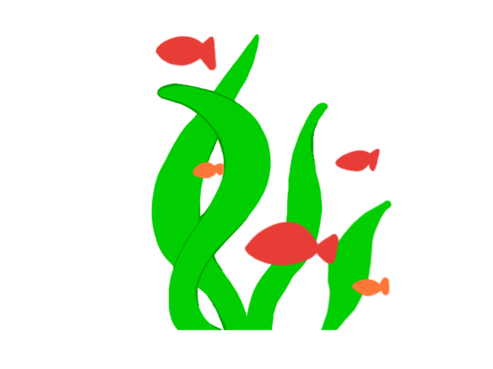

海洋馆介绍
欢迎您来到XX海洋馆！这里是全国最早，建设最好的一批海洋馆，其中，白鲸，海豚，海狮，海豹等海洋精灵齐聚一堂，我们将为您展示人与自然和谐共处的盛景！

海洋馆建筑示意图
我们始终秉持“保护海洋生态，传播海洋文化”的核心使命，每年接待游客超200万人次，开展海洋科普讲座、公益研学活动超百场，是XX市科普教育基地、国家级4A级旅游景区。
馆内拥有国内领先的海洋生物养护技术团队，致力于濒危海洋生物的救助与繁育，先后成功繁育白鲸、企鹅、水母等多种珍稀海洋生物，为海洋生态保护贡献力量。


海洋馆蓝吊鱼实景展示
馆内地图及营业、演出时间表


海洋馆内部地图
馆内设施：除展览厅外，海洋馆为参观者设有海葵妈妈家庭餐厅，小珊瑚儿童乐园，海洋知识宣传影院，以及流动贩卖车三辆，休息室两处，母婴室一处，卫生间三处。
我们还为参观者准备了纪念品商店，欢迎大家在游览结束后进行商品选购。
联系电话:0333-23332333 紧急电话：19919991999
馆内设施
馆史沿革
2010年
XX海洋馆正式创立，由本地著名实业家，慈善家安XX投资建成。

创始人照片
2013年
XX海洋馆正式对外开放，一代馆长安XX秉持着ABCD，ABCD的观念，经营着海洋馆，
很快就成为了当地的地标式建筑与活动场所，深受各个年龄段市民的喜爱。首年接待游客突破100万人次。
2016年
二代馆长安XX学习国外先进经验，开创了海洋保护科普讲座。同时极地动物区建成开放，引入北极熊、北极狼、企鹅等极地生物。
2020年
获评国家级4A级旅游景区，启动美人鱼表演区升级改造。
2023年
三代馆长贾X引入资金，扩建了海洋馆，并拓展了许多游玩项目，使海洋馆焕发新生机。海洋生物救助中心成立，累计救助搁浅鲸豚、海龟等海洋生物超50只。
员工荣誉墙
每一份荣誉的背后，都是海洋馆人对海洋事业的坚守与热爱。以下是近年来获得市级及以上表彰的优秀员工代表：
驯养部——我们是动物伙伴
海洋馆目前有30名驯养员。为了保证海洋生灵的健康，并让参观者观赏到海洋生物的可爱姿态，驯养员24小时待命，许多员工与海洋生物同吃同住，为大家贡献人与自然和谐相处的美景。
演职部——我们是海中精灵
海洋馆的演艺项目繁多，包括美人鱼表演，科普宣传等。作为海洋馆的宣传主力，16名演职部员工各个秉承信念，为参观者贡献了异彩纷呈的出色表演。
“当我潜入水下，仿佛就变成了真正的美人鱼，自在畅游，这不仅是一份我梦寐以求的表演工作，更能让我于动物们建立奇妙的链接！”-XX年XX月XX日入职的赵1（工号xxxx）这样说。作为一名舞蹈学院的毕业生，她的专业和热忱很快让她成为了演职部的明星员工，每天00:00，观看她美人鱼表演的参观者络绎不绝……”
“将海洋生物的知识传播出去，让更多人喜爱，了解海洋，是我的使命！”-XX年XX月XX日入职的XXX
管理部——我们来规划指挥
海洋馆的管理人员分工明确，相处融洽，共同为海洋馆的未来绘制专业蓝图。
人事管理具体情况......
后勤部——我们来维护美丽
后勤部与本省著名慈善公司多年合作，雇佣残障人士
具体贡献待补充......
馆内新闻
无限期停业通知
发布时间：2026-03-15
海洋馆不是解散了，只是没人来了......
纪念品上新，欢迎各位游客前来选购
发布时间：2026-02-28
XX海洋馆纪念品商店新上架xxx纪念品，满足您的更多需求！
本周海洋知识科普影院科普人员安排
发布时间：2026-01-10
甲:14:00-15:00
乙:15:00-16:00
丙:16:00-17:00 (反正均没有馆长参与)
乙:15:00-16:00
丙:16:00-17:00 (反正均没有馆长参与)
关于海洋馆演出事故的道歉信
发布时间：2026-01-02
深表歉意私密马赛！
